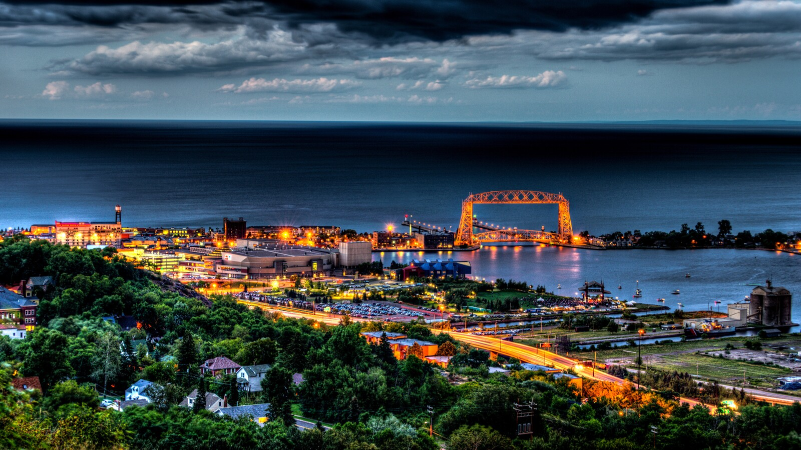

Discover UMD & Duluth
I chose UMD for its scenic views, quality education and affordability. Prior to considering UMD, I had never visited Duluth and only knew that it was a very beautiful place that a lot of my peers went to visit during school breaks.
Why I Chose UMD
- My first reason of why I chose UMD was because of the affordability and education. UMD provides high quality education, while giving out many financial aid opportunities and is overall cheaper than other public schools in the area.
- My second reason for choosing UMD was because of its scenery and location. Duluth has a lot of parks and trails that are extremely accesible for people to visit.
- My third and last reason for choosing UMD was because of its community. I have found it a breeze to meet new people and network with others. Since welcome week, I have felt a strong sense of belonging and I hope to continue to grow my relationships and create new ones!
What I Love About Duluth
So far, I have been loving the food around Duluth. Some of my favorite spots include Big Daddy’s Burgers, Love Creamery and Cloud 9! I also have been having a lot of fun exploring the trails and parks Duluth has to offer. I recently visited Enger Park which houses a large tower overlooking Duluth and the American-Japan peace bell, given to Duluth as a gift from their sister city, Ohara-Isumi..
My Campus Experience
On campus, I have met numerous people who are extremely welcoming and kind. These meetings are common and make UMD feel like a second home.